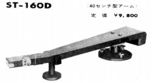
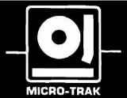
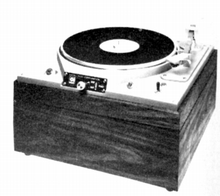
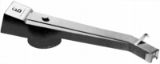
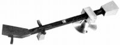
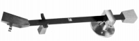

MICRO TRAK（マイクロトラック）
アメリカの業務用アーム・ターンテーブルなどのブランド。1960年代に流行した、いわゆるグレイ・アームの他、アーム素材が木（厳密にはインプレグネートウッド＝プラスチック含浸強化合板）のアームなどがあった。代理店はアール・エフ・エンタープライゼス。1970年代で姿を消した。

（グレイ・アームに影響を受けた国産トーン・アーム 左がグレースの100シリーズ、右がサウンドのST-160D。なお国内でグレイタイプのアームが流行たのは1960年代である。マイクロトラックのアームが資料に登場するのは1975年頃からだが、その前に紹介されていた、「グレイリサーチ」社または「グレイ」社との関係は不明である。）

�T.アーム

(206-S)

(左 303 PROFESSIONAL ARM 右 303 PROFESSIONAL ARM)303 PROFESSIONAL ARM 303 PROFESSIONAL ARM